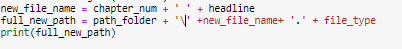

יש לי בעיה ביצירת נתיב חדש שלדעתי קשורה לשרשור באמצעות “\” , כאשר אני מדפיסה את הנתיב שנוצר אני מקבלת פלט נכון, אך כאשר אני מחזירה את הנתיב או משתמשת בו, הוא יוצא משובש.
אני כבר די אובדת עצות עם התרגיל וחיטטתי באינטרנט להבין איפה הבעיה.
אשמח לעזרה!!

נסי להשתמש ב-/ במקום
לייק 1
לא אפשרי…

לא \ יחיד, / - כלומר סלש לכיוון ההפוך
לייק 1
גם ניסיתי, לא הצליח :\
את בטוחה שהבעיה היא בסלש?
תנסי להשתמש בכלי ייעודי ליצירת path
יכול להיות שאחד מהמשתנים של הpath או השם מכיל סלאש בסוף או בהתחלה שלא לצורך ?
קרה לי אותי דבר ואני לא מצליח להיזכר למה ומה עשיתי לשנות את זה  אבל זה היה משו קטן
אבל זה היה משו קטן
לייק 1
תנסי לשים r לפני המחרוזת של הבק-סלאש
3 לייקים
בדיוק! נזכרתי שזה מה שזה היה
לייק 1